|
|
CHARLES AND ÉZILDA
THE
FIRST WAR
In
August 1914, England went to war, and Canada along with
it. Charles was one of the thousands of young men who flocked to the recruiting centres.
They enlisted
out of a taste for adventure. The lure of Europe was very strong and everyone
was saying the war would be over by Christmas, so why not? After
a few weeks of training at Camp Valcartier, Charles enlisted on September 26, 1914,
and sailed for Europe in October. We
have a copy of his attestation paper.
For 4 years and 8 months Charles Consigny took part in the Great War in
Europe. He belonged to the Canadian
Artillery, 1st Canadian Heavy Battery; his service number was 43804 and he was
a gunner. Here
is his "discharge" certificate.
According to the memories of his daughter Jacqueline, he
had
been "gassed". No doubt the
severe migraines he suffered from for the rest of his life were the after-effects.
It is also more than likely that Charles suffered from some degree of
deafness, since all gunners were more or less affected.
POSTCARDS
ÉZILDA RECEIVED FROM THE OLD COUNTRY
We
do not know how Charles and Ézilda met, or when they
got engaged. We have a few postcards Charles sent
to his fiancée at the end of his time in Europe.
Three
cards from Namur in Belgium, February 19, 1919: card no.
1 card no. 2
card no. 3
a card written in France
on March 3, 1919, but showing a view of Brussels.
a card written from Ripon, an
old town in North Yorkshire, England, on April 28,
1919.
| To learn more about Charles's part in the
First World War, visit the site created in 2010 that
is devoted to him.
CHARLES'S
WAR |
|
|
THE
WEDDING
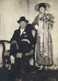 Charles was reunited with his family and his fiancée, Ézilda
Côté, at the end of May 1919. He drew the balance of his army account, about $755,
and the wedding preparations began. Ézilda lived in the Maisonneuve district, at 580 Bourbonnière.
She was in half-mourning for her father, which is why she is dressed in
black in the photos from this period.
The engaged couple went up to Quebec City to be godparents, on June 10, to the first
son of Crescence, Charles's sister.
Charles and Ézilda were married in Très-St-Nom-de-Jésus parish in Montreal on July 28, 1919.
On the marriage record Charles gave his trade as plumber. Their witnesses were Antoine,
Charles's brother, and Omer Béchard,
Ézilda's brother-in-law. That day she wore Charles's engagement present, a pair of
teardrop pearl earrings. We still have these earrings.
|

The signatures at the bottom of the marriage record. Note that Ézilda was illiterate,
but she had learned to sign her name.
|
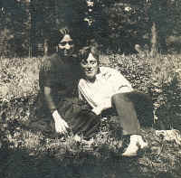 |
The newlyweds took the train to Ottawa,
where
they spent two days at the Château Laurier on their honeymoon. When they got back, the party was
not over yet. It was an
old custom, then dying out, to celebrate a wedding like this over several
days.
|
|
MARRIED LIFE
I suppose that after their wedding the couple lived for a few years with
Ézilda's family. This is because there is no trace of the couple in the
Lovell directories before 1925. Such living arrangements
had long been common, and even after the Second
World War, since young couples lacked the means. So they
lived first at 580
Bourbonnière, then at 2055 Ste-Catherine, at 2709 Ontario, and at 2531
Ste-Catherine est. (N.B. these addresses date from before the city's renumbering and
no longer match today's).
We find a flat in the name of Consini Eug only from
1925 on, and it is at 2179 Létourneux.
On his children's birth records, Charles
gave his trade as
plumber or day labourer. We know nothing more, except that finding
work was not easy for men who had spent so long in Europe,
and that the couple also had to get through the "Great
Depression".
We have a series of four
postcards, sent
probably in the 1920s, that reveal Charles's boredom and a
certain distress. In them he mentions
steps he was taking to go to Boston for some new
training that would let him work like Rolland, his
brother-in-law. Part of the text is illegible, so we do not
really know what he had in mind...
Charles
and Ézilda had five children, three of whom reached adulthood, and they spent their lives in Maisonneuve. They
were surrounded by many relatives: Ézilda's mother and all her brothers and
sisters, and Charles's brother, Antoine. |
|
WAR AGAIN
When the Second World War broke out, Charles returned to
active service. He signed his enlistment form on June 3, 1940, in Montreal.
He was attached to unit no. 4 A, Veterans Guard of Canada, with the
service number D-107010. The couple kept in touch by correspondence, by
letters or post
cards. Being illiterate, Ézilda had to have Charles's letters read to her by someone else,
and dictate her reply. The
children took on that role as soon as they could read and write. In July 1940
Charles was in Quebec City, in September at Île-aux-Noix.
In 1941 he was posted to Kingston.
|
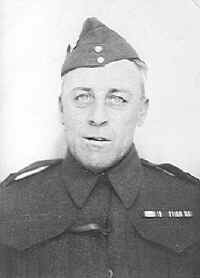
Charles Consigny
|
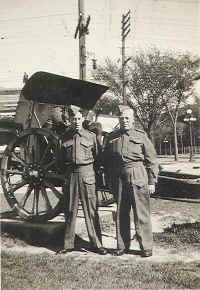
Arsène
and Charles in 1940-41
Father and son pose in front of an artillery piece.
Charles
had belonged to an artillery unit in the First War.
|
Charles died there on October 19, 1941. His death certificate gives as the official cause
'thombois', that is, in all likelihood, a
thrombosis (formation of clots in a
blood vessel). But doubt
would always remain in the family. In
fact, Ézilda asked to see her husband one last time before the funeral.
The military authorities refused to open the coffin. This refusal offended the family and led them to suppose that Charles's body might
bear marks proving a death that was not natural! Since Charles's last posting was supposedly
guarding German prisoners, could he have been killed during an escape or
an escape attempt?
Charles Consigny's name can be found in Ottawa in the
Book of Remembrance of the Second World War for 1941, page 27.
Charles was buried in the Côte-des-Neiges Catholic cemetery in
Montreal, in lot 3410-M, grave 4805. This plot belongs to
the army, and it is full of small white monuments. During the First
World War the federal government bought
two large plots to bury its soldiers, one in the Catholic
cemetery and the other in the Protestant cemetery. These two cemeteries
are neighbours, on Mount Royal, but a fence has separated them since
their founding in the mid-19th century. Since the army's two plots
adjoined each other, the army required, in the
purchase contract, that a gate be built in the fence separating
its two plots. The army wanted no separation between its
Catholic and Protestant soldiers, who had fought side by side
during the war. This gate is still the only link today
between the two Mount Royal cemeteries. |
|
ÉZILDA, WIDOW
Ézilda lived on a "veteran's widow's" pension
paid monthly by the federal government. This pension saved her from destitution, because at that time the income
security system did not yet exist. Only the federal old-age pension
had been introduced, but it was paid at 70, while
Ézilda was only 50 when she was widowed. Her son Arsène, who
now had the status of "only son of a widow", was exempted
from going to war in Europe even though, like most young men of
the time, he had received military training (at Grosse Île,
opposite Montmagny, among other places).
|

Fabiola, Arsène, Jacqueline
|

Jacqueline at the American Can plant

|

Arsène at the Botanical Garden
|
Ézilda's
children started factory work at 15 or 16 to help their
mother, paying her "board" every week. That
was the way of life then: children had to help their parents financially
as early in life as possible. Education beyond
elementary school was not the norm. Jacqueline worked at American
Can Co., at the corner of Ontario and Pie IX. Her uncle Antoine Consigny
worked there and "got her hired", his young niece.
Fabiola worked in a munitions factory during the war; she
earned good wages there, but for risky work.
All three of
Ézilda's children
married in 1946. For her two
daughters, Fabiola and Jacqueline, she had to bear the whole cost of the
wedding as "parent of the bride". Fabiola's wedding to Elphège Daoust was already planned for June 29, 1946, when Jacqueline decided to marry that same day as well, to
Gérard Charette, recently back
from Europe in the spring of 1946. So
Ézilda's two daughters had a "double wedding". As for Arsène,
he married Marthe Chaput on December 21 of the same year.
|
These
photos were sent to Gérard Charette, who was in Europe in
1945-46 taking part in the Second World War. |
|
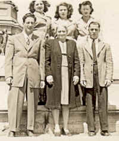
Marthe Chaput (Arsène's
fiancée), Jacqueline, Fabiola, Arsène, Ézilda, Elphège (Fabiola's
fiancé) at the Botanical Garden.
|

Jacqueline set up a little scene
on the back balcony of 2179 Létourneux. We suppose
that she usually sat somewhere else to write to Gérard, but
there is no doubt the engaged couple kept up a steady
correspondence, given the number of postcards we still have from
that time.
|

Ézilda, Elphège, Fabiola and
Jacqueline, back balcony of 2179 Létourneux
Many photos
were taken outdoors because the light was better
for the cameras of the day.
|
|
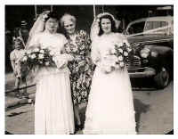
Fabiola, Ézilda,
Jacqueline
June 29, 1946, St-Jean-Baptiste-de-Lasalle parish
|
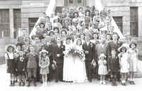
Group photo taken
in front of the "St-Nom-de-Jésus" girls' school, at the south-east
corner of Hochelaga and Pie IX
.
|
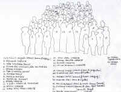
list of the
guests
|
Ézilda
was not left alone, however, because of a housing shortage
(no new housing was built during the war, and many weddings
took place at its end): newlyweds at that time lived
with their parents. So Fabiola and Elphège spent five years with
Elphège's mother, and Jacqueline, after a short stay with her mother-in-law,
went back to her mother's. She and her husband Gérard spent more than a year there
and had their first child, Nicole, there. And so
Ézilda became a grandmother. She would have 16 grandchildren. She took charge of the
"relevailles" (lying-in) of her two daughters after every
birth. That meant staying at their homes, taking charge
of the household and the children, and caring for the newborn and its mother.
It was a custom of mother-daughter help in which she never once
failed, right up to the birth of her last grandson, François,
a few months before she died in 1964.
|

Ézilda, Jacqueline, winter 1947
|
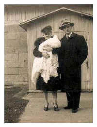
Ézilda, Gérard, April 13, 1947, Nicole's
baptism
|
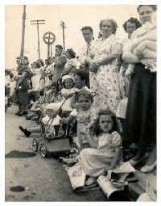
Ézilda, her children and grandchildren, on
St-Jean-Baptiste Day 1951
|
From
1948 on, Ézilda lived alone at 2179 Létourneux, except for the time
when she took in her mother.
Georgianna Pageau, whose health was failing, gave up her flat
on rue Lasalle and stayed with some of her children, but mostly
with her son Émilien, until her death on August 4, 1951.
|

Georgianna and two of her daughters
|
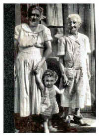
Ézilda, Nicole, Georgianna
|
In
the mid-1950s, Ézilda could count on her daughter Fabiola and her son-in-law
Elphège, who moved into the flat next door, at 2175 Létourneux. They lived there with their four children.
Elphège worked as a caretaker for the Catholic School Commission. As for Arsène, he spent
most of his married life on rue Orléans, also in the
Maisonneuve district. Only Jacqueline lived farther from her mother, first
in Verdun, then in the north of Montreal, and in St-Luc, a small village
in St-Jean county about twenty miles from Montreal. Still, she visited
Ézilda very regularly.
Ézilda died at home on October 17, 1964.
She is said to have died of breathing problems after
some painting she had taken on alone in her flat, or,
according to others, of an aneurysm. It was her grandson Robert Daoust who is said to have raised the alarm.
His brother Gilles remembers that it was a very
beautiful fall day; he remembers seeing Arsène's car come racing
up, as he had just been told of the situation. Arsène
worked nights for Canadian National (the railway), so he
was at home during the day and could be reached quickly; no doubt
he was woken up.
As
chance would have it, the emergency call  (what
we now call 911) was taken by Gérard Charette, Ézilda's son-in-law. He worked as an
emergency call dispatcher for the
Montreal police. His shifts were six hours
straight a day, and he "changed shifts" every
week. So on October 17, 1964, Gérard was working days and himself sent
the emergency services to Ézilda's. But it was too
late. Gérard left work to rush to the
scene, then went home to St-Luc to break the news in person
to Jacqueline. Here is Francine's account: "
I remember that that day I was playing alone outside, and it was a nice day. I saw Papa's car as it went
by my uncle Benoît's former garage. I ran in to tell
Maman that Papa was coming. She told me that was impossible,
that he was at work, but it really was him. They went off by themselves and he
told her the news." (what
we now call 911) was taken by Gérard Charette, Ézilda's son-in-law. He worked as an
emergency call dispatcher for the
Montreal police. His shifts were six hours
straight a day, and he "changed shifts" every
week. So on October 17, 1964, Gérard was working days and himself sent
the emergency services to Ézilda's. But it was too
late. Gérard left work to rush to the
scene, then went home to St-Luc to break the news in person
to Jacqueline. Here is Francine's account: "
I remember that that day I was playing alone outside, and it was a nice day. I saw Papa's car as it went
by my uncle Benoît's former garage. I ran in to tell
Maman that Papa was coming. She told me that was impossible,
that he was at work, but it really was him. They went off by themselves and he
told her the news."
Ézilda
had hoped to be buried near her husband, but of course that was
not possible. So after her death on October 17, 1964, she was
buried in a common grave in the Côte-des-Neiges Catholic cemetery
.
|
|

|
|
 AT THE
CONSIGNYS'
AT THE
CONSIGNYS'